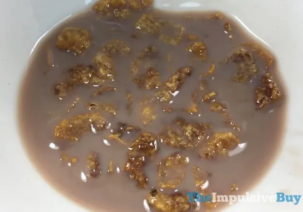

Mudbutt cereal!

Don't judge a book by it's cover!
Famous saying that very much applies to this delish meal. Even though muddbutt cereal is the nastiest thing you may ever set your eyes on, the taste is a fastpass to heaven!
There are a few different styles of mudbutt cereal, all depending on the type of cereal you use. In this recipe, we will be using frosted flakes as it is the original version.
Ingredients
- One bowl
- Any amount of frosted flakes
- Milk
- Nesquik chocolate powder
Steps!
- Pour however much cereal you like into the bowl
- Pour however much chocolate powder you like on top of the cereal.(To be considered "Mudbutt", at leat three spoonfuls of powder are needed.)
- Pour just enough milk that the cereal is not drowning but starts to float.
- Enjoy!
Disclaimer, this will have you running to the toilet. Do not eat before important events!